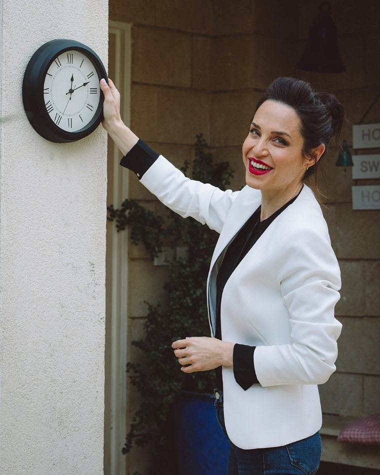
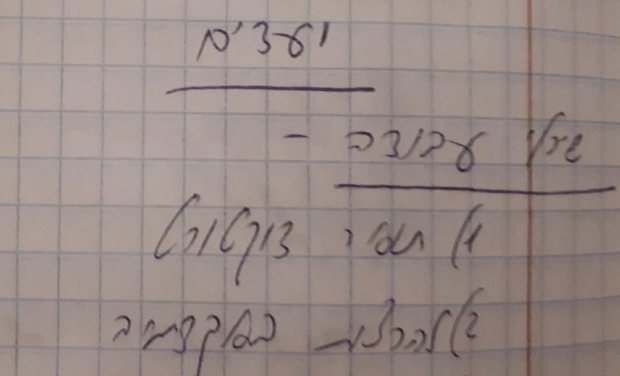
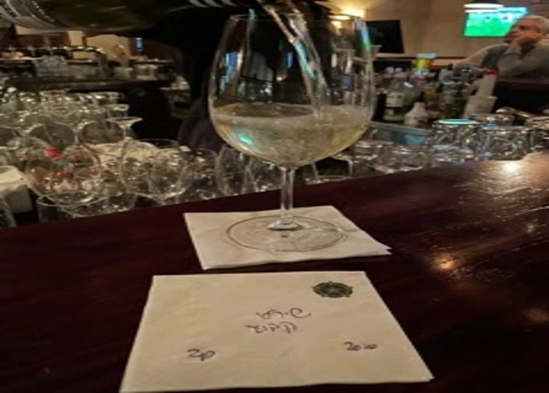

כפי שהופיעה ב:


ד״ר שירלי הרשקו, מומחית בינלאומית בקשב וזוכת המקום הראשון
על המחקר שהציגה בכנס העולמי שנערך בליסבון ב-2019 חושפת:
קורס ארגון זמן בזום, 3 מפגשים בליווי אישי יומיומי:
איך להספיק את מה שחשוב לך באמת,
בלי לרוץ כל היום ובלי לחץ של רגע אחרון?
מתחילים ב-19.11, בימי חמישי 10:30 עד 12:30

מזדהה עם משהו מפה?
מתקשה להשתלט על העומס בחיים?
לא נמצא זמן לפעילויות פנאי או לנוח?
פגישות נשכחות, והדברים מציפים אותך?
עושה הכל ברגע האחרון ובלחץ אטומי?
הטלפון משתלט ומבזבז לך את הזמן?
מה שתכננת ביומן רחוק לגמרי מהמציאות?
אם מצאת את עצמך מזדהה…
כדאי לך להגיע לקורס שמלמד שליטה בחיים.
מתחילים להשקות את הגינה…
ואז נזכרים שהמכונית צריכה שטיפה.
בדרך יש דואר על השולחן, והפח כבר מלא.
פחית קולה מתחממת על הדלפק, ופתאום מוצאים את המשקפיים.
ובערב, המכונית לא שטופה, החשבונות לא שולמו, והפרחים עדיין צמאים.
״רצתי כל היום. אז למה לא הספקתי כלום?״
כמו העכבר על הגלגל:
רץ ורץ, ונשאר באותו מקום.
ואולי דווקא קשה להתחיל.
הרשימה מסודרת ויפה, תלויה על המקרר…
והיא פשוט לא קורית.
יש סיפור ידוע על פשפשים בצנצנות:
צנצנות פתוחות מלאות פשפשים, ואף פשפש לא קופץ החוצה.
בזמן האילוף הצנצנות היו סגורות.
הפשפשים למדו לקפוץ רק עד המכסה.
גם כשפותחים אותן, הם כבר לא מנסים.
ככה נראית תקרת הזכוכית של ארגון הזמן.
אחרי עוד ניסיון שלא החזיק מעמד,
מפסיקים להאמין שזה אפשרי.
עד כה התחושה היתה שהמשימות היומיומיות משתלטות ושאין סיכוי שאספיק אותן. הפרויקטים היו מאיימים וענקיים. אבל כעת אני מופתע לגלות שיש זמן לכולן, ואפילו נשאר זמן רזרבי לפנאי וחברים! תודה על קורס מעצים כיפי ומרגש שנותן גם הרבה תקווה!

נעים מאודד״ר שירלי הרשקו
בעשור האחרון לימדתי יותר מ-5,000 אנשים(!)
את סודות ארגון הזמן.
פיתחתי שיטה מדויקת לארגון זמן.
קראתי לה ״רק רגע״.
בדקתי אותה במחקר הפוסט דוקטורט שלי באנגליה באוניברסיטת סאות'המפטון.
המחקר הראה שהיא משפרת את איכות החיים, ולטווח הארוך.
אני משתמשת בה גם בעצמי!
ב-2013 כתבתי על פתק את המטרות שלי: תואר דוקטורט ולהרצות באקדמיה.
שתיהן התגשמו.

בזכות השיטה הפתרון שלי לדוקטורט היה מאוד יצירתי!
ככה נוספו לי כל יום שעתיים לכתוב מאמרים וסיימתי ב-4 שנים.

זכיתי במקום הראשון על המחקר שהצגתי בכנס העולמי לקשב בליסבון ב-2019.

היום אני מנהלת קהילה של יותר מ-60,000 אנשי קשב.
יצרתי פודקאסט עם 150 פרקים ומיליון האזנות.

בנוסף כתבתי 6 ספרים בעברית וספר באנגלית, כולם רבי מכר.

ומה גילה המחקר?
שאלנו את משתתפי הקורס על איכות החיים, ארגון הזמן, הקשב, התזונה והספורט.
לפני הקורס, בסיום הקורס, ואחרי חצי שנה.
בסיום הקורס הרמה עלתה בכל המדדים.
ואחרי חצי שנה? היא לא רק נשמרה, היא המשיכה לעלות.
והכי הרבה עלתה איכות החיים.
המשתתפים סיפרו שהעבודה עם השיטה עוזרת להם לנקות את הראש.
ויותר מזה, שהחיים שלהם הפכו מסודרים יותר.
והבשורה הכי חשובה?
אנחנו לא מנהלים את הזמן.
אנחנו מנהלים את הקשב שלנו.

לכולנו יש 24 שעות ביממה, ולא שנייה מעבר.
מה שאפשר לשנות זה מה שאנחנו עושים איתן.
זה בדיוק כמו המשל הבא:
שני חוטבי עצים עובדים באותו קצב בדיוק.
אחד מהם חוטב הרבה פחות.
הגרזן שלו קהה.
למה הוא לא משחיז אותו?
התשובה שלו:
״אין לי זמן!!!״
בקורס הזה משחיזים את הגרזן.
לקחתי לתשומת ליבי את עניין ניהול הזמנים, ואני מסדרת את הזמן יותר טוב ממקודם ומספיקה יותר דברים. אני רוצה להגיד לך תודה שהצלת אותי... רק שתדעי ששינית לי את החיים.
למה זה עוד לא הצליח?
לחכות למוטיבציה
היא מגיעה לכמה שניות, ונעלמת לפני שמתחילים.
רשימה לכל החודש
אי אפשר לדעת מה לעשות קודם, אז הרשימה נשארת על המקרר.
אפליקציה מתוחכמת
לא צריך אפליקציה מסובכת. צריך להוציא את הדברים מהראש.
להפוך לגאון של ניהול זמן
לא צריך להיות גאון של ניהול זמן. צריך שיטה שמתאימה לך.
מה שכן עובד:
שיטה מדויקת שמותאמת אליך, ותרגול כל שבוע בליווי אישי.
אני כבר ממש מרגישה הבדל וזה כמובן שמים וארץ עבורי כי אני מיואשת כבר שנים רבות ופתאום לחוות משהו עובד זה עוצמתי...
שיטת ״רק רגע״
- כי היא נותנת עוד רגעים בחיים.
- היא מאפשרת להיות ברגע וברוגע.
- אחרי שלומדים אותה היא לוקחת רק רגע.
מה נעבור יחד בקורס?
מפגש 1 · 19.11
איך לארגן את הזמן
כדי להגיע למשימות וליעדים
לומדים את שלושת השלבים של שיטת ״רק רגע״, ויוצאים עם לו״ז לשבוע הקרוב.
שבוע של תרגול עם הלו״ז שלךמפגש 2 · 26.11
איך לעמוד בתכנון
ולהתמודד עם הבלת״מים
5 מיתוסים על ארגון זמן, 5 אסטרטגיות, ומה עושים עם דחיינות.
שבוע של תרגול עם הלו״ז שלךמפגש 3 · 3.12
איך לדייק את הכלים
ולהתמיד לכל החיים
הרגלים, שעות השיא שלך, ואיך מכניסים ללו״ז גם את מה שעושה לך טוב.
הדייט השבועי שלי כי זה מה שעושה לי טוב!

הקורס ברור נעים ואנושי! עזר לי לשנות את ההתנהלות היומיומית. קודם לא ידעתי איך להתנהל ולתכנן מראש את היום שלי והכל היה "על הקצה" או באיחור או שלא קורה. לא ידעתי מה עוד אפשר לחדש אבל חידשת ונתת כ"כ הרבה אסטרטגיות!
ומה עוד מקבלים?
בונוס 1
כלים וטיפים נוספים בוואטסאפ בכל יום של הקורס
בונוס 2
ליווי אישי וצמוד דרך המייל ופידבק על הלו״ז
בונוס 3
מפגש רענון כל חודש גם אחרי שהקורס נגמר


בונוס 4
כל שלושת ספרי השמע שלי במתנה
בונוס 5
חוברת סיכום הקורס עם כל הכלים מסודרים
בונוס 6
הקלטת כל המפגשים ללא הגבלת זמן
הקורס מתאים לך אם
- יש לך מלא דברים לעשות ומלא רעיונות, ולא ברור ממה להתחיל.
- הזמן נמרח לך בדברים לא חשובים, ובסוף היום מגיע התסכול.
- כבר ניסית אפליקציות, רשימות וטיפים, וזה לא החזיק מעמד.
- יש לך הפרעת קשב, או חשד לכזאת. השיטה הוכחה כמותאמת גם לאנשי הקשב.
- בכל שלב: עבודה או חיפוש עבודה, 3 ילדים או חופשת לידה, לימודים או הייטק.
ולמי הקורס לא מתאים
למי שמחפשים פתרון קסם בלי לעבוד.
זה קורס מעשי: כל שבוע מתכננים ומתרגלים.
זה מה שגורם לשינוי להחזיק לאורך זמן.
הבוגרים מספרים
עשיתי דברים שאני דוחה כבר שנה וחצי... אני לא מאמינה ששנה וחצי הדבר הזה על הגב שלי ונפתר כל כך מהר 🙏
כבר אני קוצרת פירות מהקורס :) הבוקר קיבלתי מחמאה מהסייעת בגן של הבת שלי על כך שהגעתי בזמן ובנחת ישבתי עם הקטנה לשחק. תמיד מגיעה בדקה האחרונה עם הלשון בחוץ :)
השיטה מעולה אני מספיקה המון יותר מאי פעם! פסח מתקרב ואף פעם לא הייתי ככה בהספק כזה!
הגענו לקורס ניהול זמן לאחר שינויים רבים שהתחוללו בחיינו… ואלו רק חלק מהדברים שהרווחנו בקורס: זמן איכות זוגי, בילויים ויציאות ביחד ובנפרד ללא רגשות אשם, בהירות בקשר למשימות ובעיקר כאלה מתמשכות, תחושת קלילות. הקורס שינה לנו את החיים. אנחנו בדייט יומן שבועי קבוע 🤩
אני מיישם את הטכניקות מהקורס וזה עובד מאוד יפה... איך פתאום נהיה לי לו״ז ברזל :)
מאז שעשיתי את הקורס שלך אני ישנה הרבה יותר טוב ורגועה יותר ומרגישה שיש לי עוד דרך ארוכה אבל רואה כל יום את השיפור וזה מטורף!
התחלתי גם לנהל את הזמן בעבודה עצמה , ההבדל הוא גדול , לפני זה הרגשתי שאני טובעת בעבודה.
הנחייה יוצאת דופן של אדם יוצא דופן במקצועיות בהנחייה מרתקת ושופעת מידע רלוונטי במחויבות ותשומת לב אישית וקבוצתית ובאופן שמעורר הערכה עמוקה ומרגשת.
כמה עולה לך היום כל דבר
שנעשה ברגע האחרון?
- ✦חשבון שלא שולם בזמן
- ✦הזדמנות שעברה
- ✦ערב שלם של גלילה במקום שינה
ועוד שנה של כיבוי שריפות…
קורס ארגון זמן בשיטת ״רק רגע״
10 תשלומים של
197 ₪או 1,970 ₪ בתשלום אחד
עשית אצלי אבחון? 10% הנחה
והתחייבות שלי: אם סיימת את הקורס והרגשת שהוא לא תרם לך כלל, מקבלים את הכסף בחזרה.
משאירים פרטים, ואני חוזרת עם הסבר על הקורס.
הייתי סקפטית כשנרשמתי, אבל הקורס באמת משנה חיים.
למה זה מחזיק לאורך זמן?
דמיינו שני ילדים ששופכים מים מקנקן לבקבוק.
אחד שופך בדיוק, ולשני הכל נשפך מסביב.
לראשון יש יכולות מיוחדות?
לא. יש לו משפך.
כוח רצון, מודעות ומוטיבציה?
זה משולש השקרים.
מה שמחזיק זה הרגלים.
ושיפור של אחוז אחד בכל יום…
הוא פי 37 אחרי שנה.
בקורס הזה בונים לך את המשפך.
את ההרגלים שצריך כדי לשפר את איכות החיים.

שירלי, יש לי שאלה…
מתי ואיפה?
בזום, בימי חמישי: 19.11, 26.11 ו-3.12, בשעות 10:30 עד 12:30.
ומה אם אפספס מפגש?
יש הקלטה והיא תישלח אליך מייד בסיום למייל.
כמה זמן זה לוקח בשבוע?
שעתיים במפגש, ועוד פעם בשבוע מתכננים את הלו״ז, ביום ובשעה קבועים בסוף השבוע. בהתחלה התכנון לוקח זמן, ומשבוע לשבוע הוא מתקצר עד לרמה של 5 דקות.
יש לי הפרעת קשב. זה מתאים לי?
כן. השיטה הוכחה מחקרית כמותאמת גם לאנשי הקשב, והקורס מתאים לכל מי שרוצה לקחת שליטה על הזמן.
צריך אפליקציה מיוחדת?
לא. מספיק יומן, ועדיף דיגיטלי בטלפון. בקורס אנחנו עובדים עם יומן גוגל (Google Calendar).
אפשר לשלם בתשלומים?
כן, עד 10 תשלומים.
עשיתי אצלך אבחון. יש הנחה?
כן, 10%.
ואם זה לא יעבוד לי?
אם סיימת את הקורס והרגשת שהוא לא תרם לך כלל, מקבלים את הכסף בחזרה.
מתי המחזור הבא?
המחזור הבא נפתח ב-17.12, ימי חמישי בשעות 10:30 עד 12:30.
רוצה להצליח יותר
אבל לא במחיר האושר שלך?
זה הרגע לקחת שליטה על הזמן.
נ.ב. יש מילה קטנה אחת שאני מבקשת להוסיף בכל פעם שאומרים לי ״זה לא מצליח לי״: עדיין. זה לא מצליח לי עדיין. עד שמוצאים את השיטה הנכונה!